Studio
Edit a deck on the canvas.
Studio changes the loaded .sld source. It does not create a second project format.
Open Studio
Start without a file to create a deck. Use --studio to edit an existing deck.
zig-out/bin/rayslides --studio talk.sldYou can also press E during a presentation.
The Studio workspace
The workspace keeps the slide visible. The main controls remain outside the 16:9 canvas.
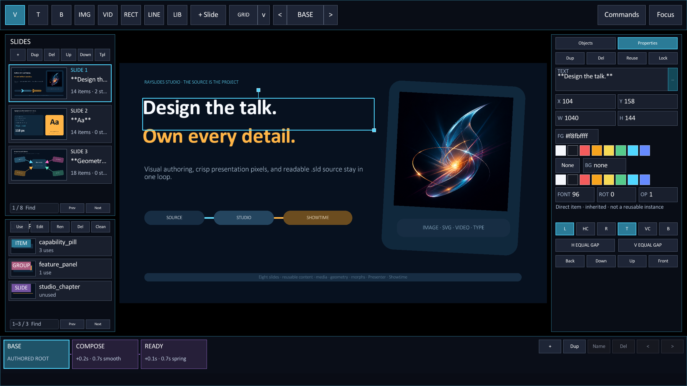
12345- 1Slides selects, adds, copies, removes, and moves slides.
- 2Library lists reusable items, groups, and slide templates.
- 3Canvas selects and moves the visible objects.
- 4Inspector shows the object list or exact properties.
- 5Timeline selects the base scene or a morph state.
Create an object
Choose a creation tool, then click the canvas. Studio returns to Select after one placement.
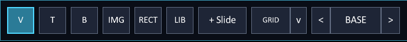
| Button | Action |
|---|---|
| V · Select | Select, move, resize, or frame objects with a marquee. |
| T · Text | Place a text box with a suggested size. |
| B · Bullets | Place a bulleted text box. |
| IMG · Image | Choose an image file, then place it on the canvas. |
| VID · Video | Choose a video file, then place it on the canvas. |
| RECT · Rectangle | Place a filled rectangle. |
| LINE · Line | Place a plain line; press A to place one with an end arrow. |
| LIB · Library | Choose a reusable item, then place it on the canvas. |
Image and Video share the same path behavior: macOS provides a native picker, every platform accepts manual path entry, and a file drop over the canvas creates the matching media item. Paths become deck-relative when the deck has a saved location and that conversion is safe.
SVG files follow the Image path, including picker, replacement, fitting, reusable ownership, diagnostics, and export. The embedded vector subset does not render SVG <text>; convert type to paths first.
Select and move objects
- Choose the Select tool.
Press V or click the first toolbar button.
- Click an object.
Studio draws a cyan painted-geometry outline plus resize and rotation handles.
- Drag the object.
Magenta guides show nearby edges, centers, and snap points.
- Drag a handle.
Use the corner to resize or the connected handle above the object to rotate. Shift keeps the aspect ratio or snaps rotation to 15°.
Use the arrow keys for a one-pixel nudge. Hold Shift for ten pixels.
Hold Cmd/Ctrl during a drag to bypass snapping. Press G to show the 20-pixel grid.
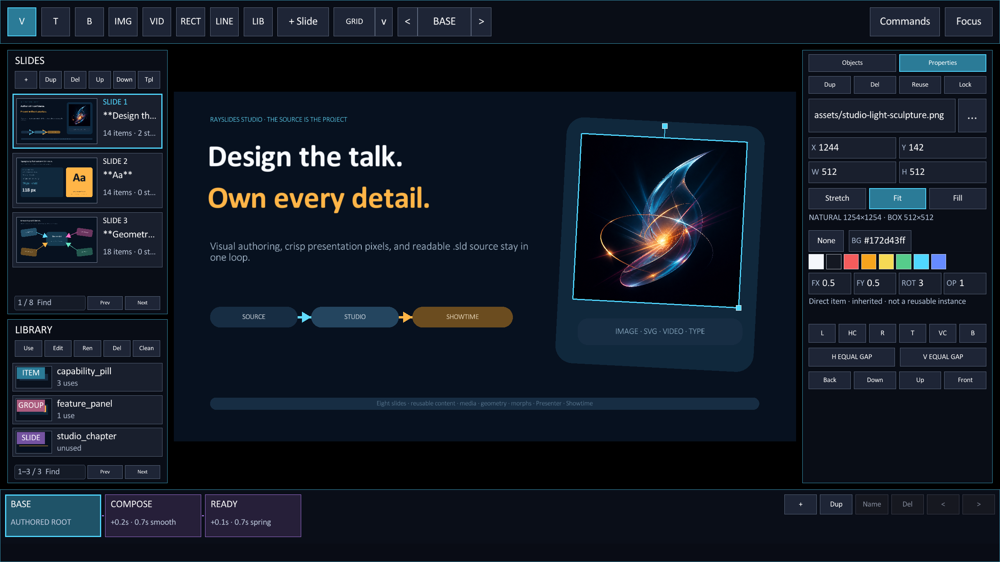
ROT value update the same source property.Select more than one object
Press Cmd/Ctrl + A to select every editable object in the current scene.
Hold Shift during a marquee to toggle its hits against the existing selection.
A group move or nudge creates one undo step. Studio keeps the selection order during layer changes.
Set exact values
Open the Properties tab after you select one object.
Edit its text, position, size, font size, alignment, corner or stroke style, rotation, opacity, and colors. Press Enter to save a value.
For an image or video, the first field shows IMAGE or VIDEO, the effective filename/path, and a separate ... replacement button. Click ..., or press Enter while Properties is visible, to choose a new file through the same picker and deck-relative path policy used for insertion. The object's geometry, ID, ordering, and other properties stay unchanged. An amber R beside a local source override restores the inherited asset.
Use Stretch to fill the box without preserving aspect ratio, Fit to show the complete picture inside the box, or Fill to cover the box with an aspect-preserving crop. FX and FY move that crop or fitted picture from 0 (left/top) to 1 (right/bottom); 0.5 is centered. Natural pixel dimensions remain visible beside the box size for images and videos alike.
For videos, choose Playback to edit Auto, Loop, Mute, poster time, volume, and opacity. The duration-aware scrubber previews the authored poster without changing the playback start. Slide cards, Library and Definition previews, Presenter preview, PNG screenshots, and PDF export use that immutable poster without interrupting live playback. Authored volume and mute return each time the slide is entered; presenter adjustments remain temporary for the current visit. Choose Layout to return to fitting and geometry. Amber R markers reset local source, Fit, focus, poster, volume, and playback-toggle overrides one at a time.
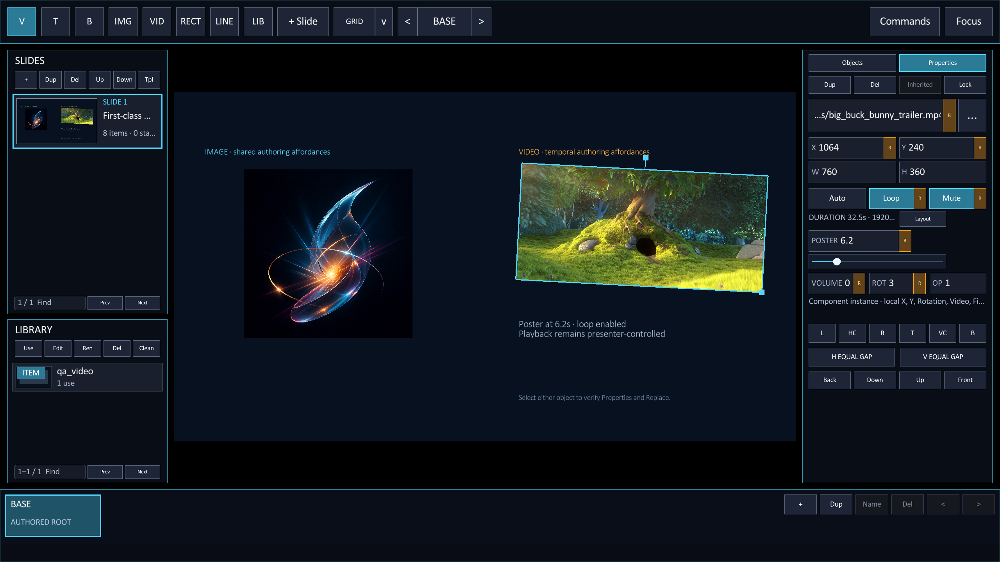
When media cannot load, Studio retains a selectable repair box while Properties keeps the filename and ... replacement action live. Diagnostics distinguish missing or unreadable files, unsupported image data, missing ffmpeg/ffprobe, probe or codec failures, and poster decode failures. Out-of-range or recoverable poster choices receive amber warnings while retaining their pixels, and silent videos are identified without being treated as broken. These overlays are editor-only and never appear on the projected or exported slide.
Text boxes provide left/center/right and top/middle/bottom alignment. Rectangle Radius is measured in logical pixels. Lines expose stroke width, up/down direction, and no/start/end/both arrow heads; their endpoint handles follow the painted stroke. ROT accepts any finite clockwise degree value around the object's effective center. These values remain source-native through reusable definitions, local overrides, morph states, Showtime, and export.
Press Esc to cancel the current value. Invalid values stay in the field and show an explanation.
| Field | Accepted value | Example |
|---|---|---|
| X, Y, W, H | A logical pixel value | 120 |
| FG, BG | A hex color or none | #61dafbff |
| Opacity | A value from 0 to 1, or a percent | 75% |
| Font | A positive font size | 52 |
| Radius, Stroke | A non-negative radius or positive stroke width | 24 |
| ROT | A finite clockwise degree value | -12.5 |
| FX, FY | A normalized media focal position from 0 to 1 | 0.75 |
| Poster | Seconds from 0 through the video's duration | 6.2 |
| Volume | A value from 0 to 1 | 0.65 |
Use the Properties actions
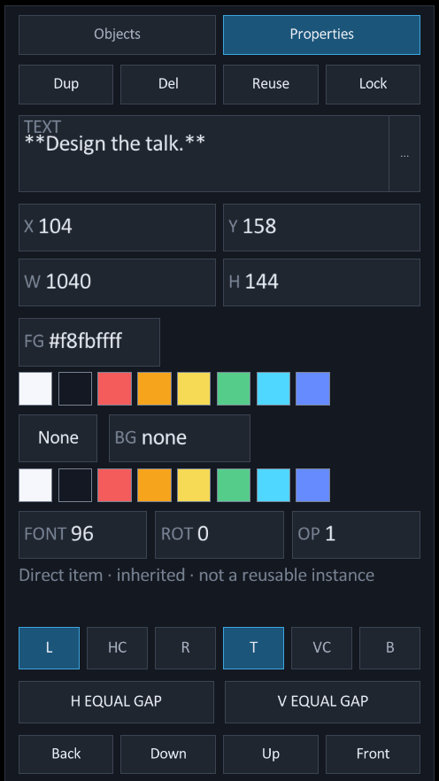
- Dup
- Clone the selection in one undo step.
- Del
- Remove direct content or hide an inherited object locally.
- Reuse
- Promote authored content, make a group, or detach a safe instance.
- Lock
- Protect the selection from canvas changes. Use the Objects list to unlock it.
- FG and BG
- Choose a swatch or enter an exact hex color.
- None
- Remove the selected object's background fill.
Duplicate and Delete can act on a multi-selection. Compatible common Properties also commit to the complete selection as one source transaction. Mixed values remain explicit, and Studio rejects the complete action when any member is unsafe.
Align and distribute objects
Select one object to align it to a slide edge or center.
Select two or more objects to align them inside the current selection bounds.
| Button | Result |
|---|---|
| L · HC · R | Align left, center horizontally, or align right. |
| T · VC · B | Align top, center vertically, or align bottom. |
| H Equal Gap | Give three or more objects equal horizontal gaps. |
| V Equal Gap | Give three or more objects equal vertical gaps. |
Each alignment or distribution action creates one undo step.
Use the Objects list
The Objects tab lists the paint order from front to back.
The list also includes hidden, transparent, and locked objects. Use it when the canvas cannot select an object.
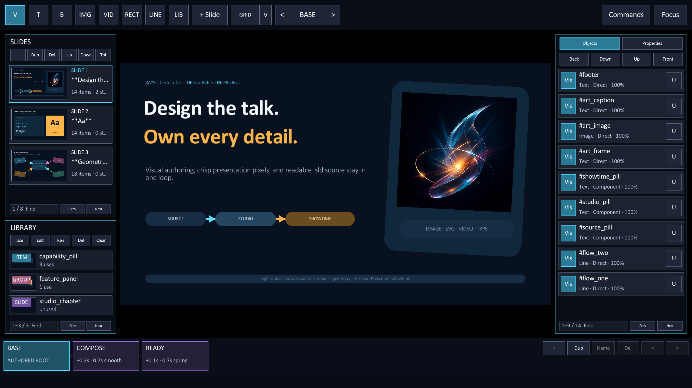
The Back, Down, Up, and Front buttons change the paint order. Studio makes each layer change one undo step.
Copy, paste, and duplicate
Copy supports literal base-scene objects and component instances. Other generated content can remain read-only.
A failed multi-copy, duplicate, or delete changes nothing. The status bar explains which source rule blocked the action.
Set the grid
Press G to show the grid and enable grid snapping.
The grid uses 20 logical pixels. Every fifth line or dot is stronger.
| Setting | Result |
|---|---|
| Auto | Adjust the grid against the slide content. |
| Dark · Light | Use a fixed dark or light grid. |
| Contrast | Change the grid strength. |
| Lines · Dots | Choose continuous lines or grid points. |
Smart guides take priority near an edge or center.
Hold Cmd/Ctrl during a drag to bypass the grid and smart guides.
Measure the layout
Open Commands and enable rulers, safe areas, or measurements. These tools do not change the deck.
Use Cmd/Ctrl with the mouse wheel to zoom around the pointer. Use the plain wheel to pan.
Press Cmd/Ctrl + 0 to fit the complete slide.
Change the workspace view
Click Slides or Inspector to open a hidden dock. Click Focus or press Tab to restore the complete workspace.
Read the status bar
The first line reports the current selection and its source owner.
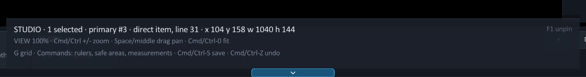
- The selection count and primary ID identify the active objects.
- The scope says direct, local instance, shared template, group, or definition.
- The source line points to the directive that owns the change.
- A notice replaces the help text after a save, refusal, or error.
Organize slides
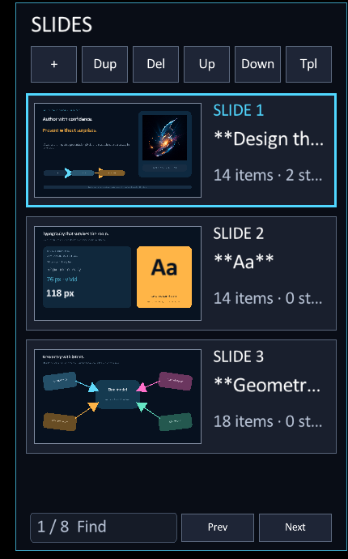
- +
- Append a blank slide.
- Dup
- Duplicate the complete current slide.
- Del
- Delete the current slide. A deck must keep one slide.
- Up · Down
- Move the current slide earlier or later.
- Tpl
- Promote the current slide to a reusable slide template.
- Find
- Filter by title, slide number, item count, or state count.
- Prev · Next
- Show the previous or next page of cards or matches.
Each slide action changes the .sld source in one undo step.
Undo and redo
Studio records each successful visual or structural source change as one history step. Undo restores both the source and the slide you were working on.
- Press Cmd/Ctrl + Z to undo one source edit.
- Press Shift + Cmd/Ctrl + Z to redo it.
- Use Undo or Redo in the Commands menu when you prefer the mouse.
The starter chooser is part of normal history. After choosing Studio, Folio, Ember, or Signal, one Undo returns to the pristine picker. Redo restores the chosen deck unless you make a different edit first.
Find a command
Press Cmd/Ctrl + K to open the command list.
Type an action, tool, category, or shortcut. Disabled commands stay visible and explain why they cannot run.
The Present commands include speaker notes, private Presenter Companion pairing, Choose presentation display, Showtime preflight, and Create portable show. The display picker names and identifies active screens before you explicitly choose one; it never assumes an external monitor is the projector. Showtime checks the exact parser, renderer, assets, reusable definitions, display, and local services without changing the deck or playback. Portable show writes an ordinary copied .sld and assets, then independently re-opens and preflights the copy.
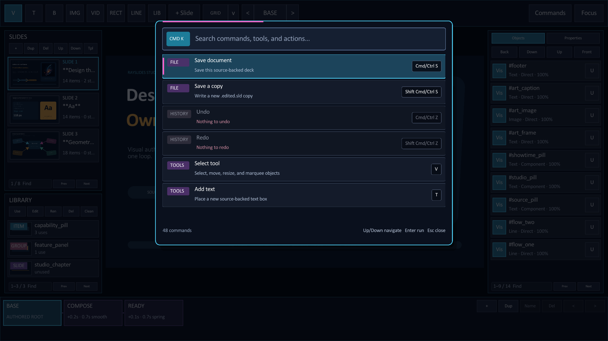
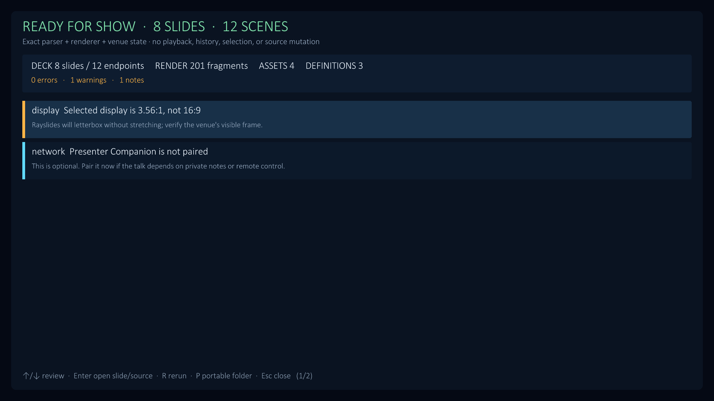
Reuse a composition
The Library contains reusable items, groups, and slide templates.
Select an entry to preview it. The preview does not change the deck.
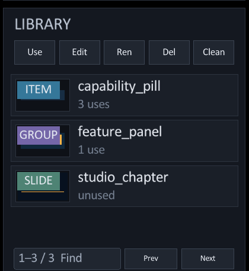
- Item
- A reusable element. Choose Use, then click the canvas.
- Group
- A reusable composition with editable member objects.
- Slide
- A template that creates a new slide.
- Find
- Filter by name, type, use count, or availability.
- Prev · Next
- Show the previous or next page of entries or matches.
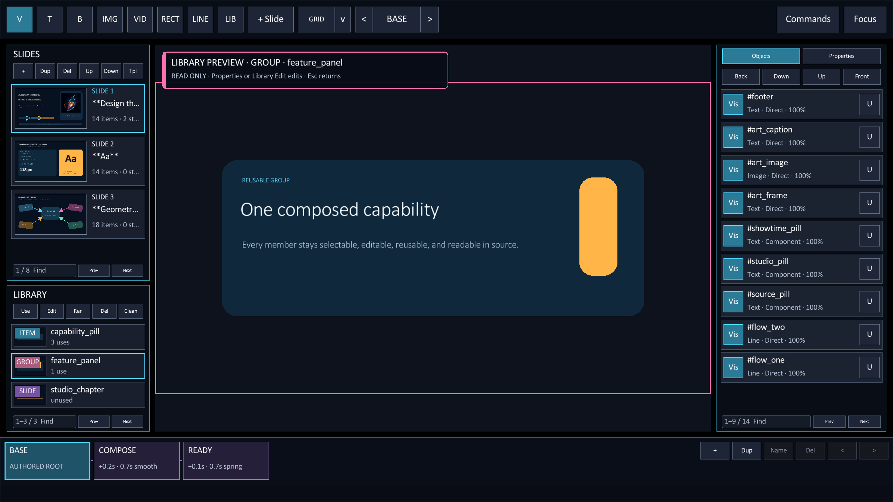
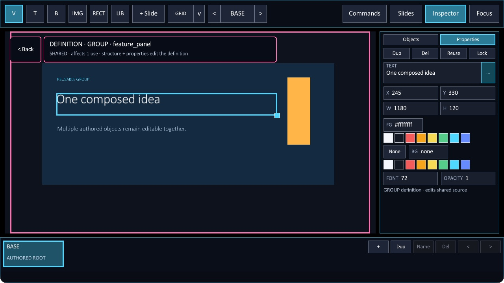
- Select a Library entry.
Studio opens a read-only preview on the canvas.
- Choose Use.
Studio places an item or group, or creates a slide from a template.
- Choose Edit.
Studio opens the shared definition and shows its member objects.
- Choose Back.
Studio returns to the deck and keeps the source changes in history.
Manage Library entries
| Button | Action | Limit |
|---|---|---|
| Ren | Rename the definition and its safe source uses. | The new name must be unique. |
| Del | Delete one unused definition. | Later uses block deletion. Slide-template deletion is not source-safe yet. |
| Clean | Preview every safely unreachable definition. | Studio leaves blocked definitions unchanged. |
Clean is a two-step action. The first click reports safe and blocked counts in the status bar.
The button then changes to Apply. The second click removes only the safe definitions.
Local and shared edits
A normal edit changes the selected instance. An inherited template item gets a local override.
Hold Alt to edit the shared template definition. Every resolved use can then change.
Image and video source, fit, focal position, opacity, and video playback properties follow the same ownership rules. A GROUP member on an ordinary slide is edited through its shared Definition or after Detach; a morph scene can override that member through its qualified ID.
LOCAL INSTANCE
One use changes. Studio writes an override beside that instance.SHARED · AFFECTS 3 USES
All resolved uses can change. Studio edits the reusable definition.Check the status bar before a shared edit. It states whether the action is local or shared.
Save and recover work
An asterisk beside STUDIO means that the source has unsaved changes.
- Press Cmd/Ctrl + S to save the current file.
- Press Shift + Cmd/Ctrl + S to save a copy.
Rayslides writes a recovery copy when you quit with unsaved work.
Next guideAnimate a deck→